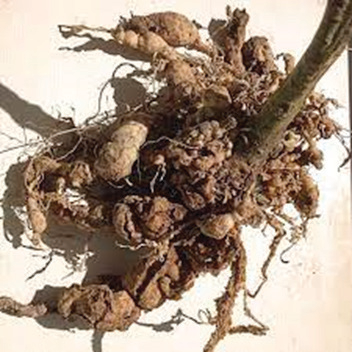
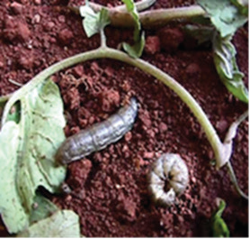
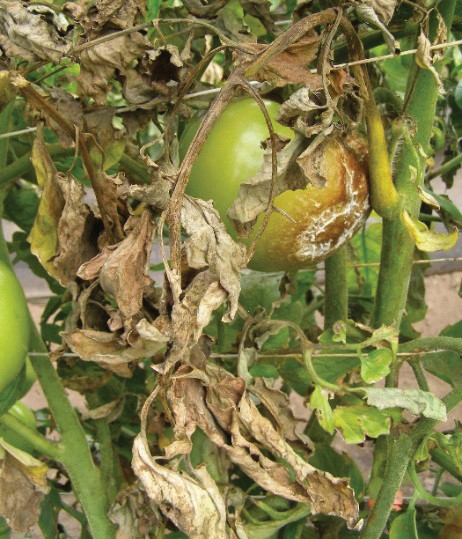

Nematodes
What they do: Feed on plant roots, causing swelling and deformation of the root.
How to identify them: Look for deformed roots and swollen roots (refer to Figure 8.10).
How to manage them: Plough soil several times to expose the worms to the sun. Rotate the crop with other crops not belonging to the Solanaceae family. Remove weeds and plant remains.

Cutworms
What they do: They cut stems of the newly emerged or transplanted plant at ground level.
How to identify them: They cut stems of the newly emerged or transplanted plant at ground level (refer to Figure 8.11).
How to manage them: Keep the field free from weeds, and use recommended insecticides.

Late blight disease
How to identify it: Look for irregular spots on the top of the leaves (refer to Figure 8.12).
How to manage it: Keep your crops free from weeds, use recommended preventive fungicides, and maintain good cultural management of your crops.
